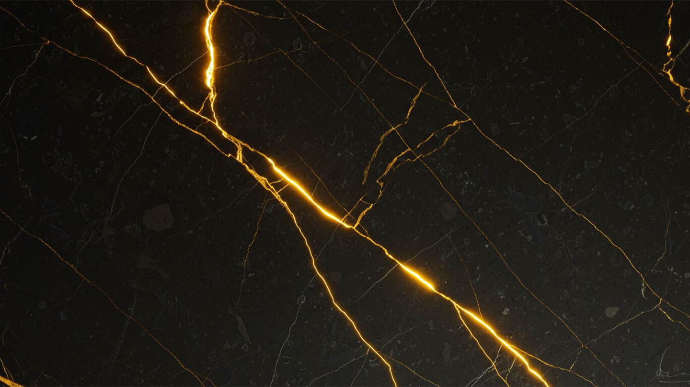
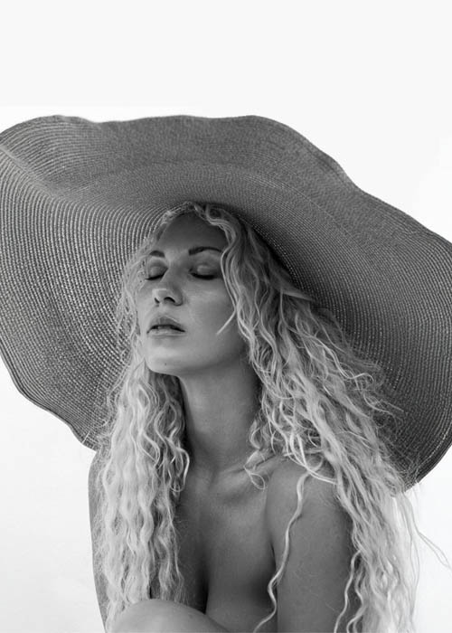
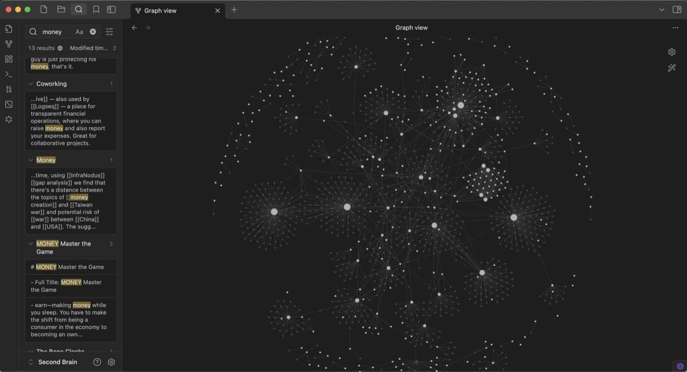
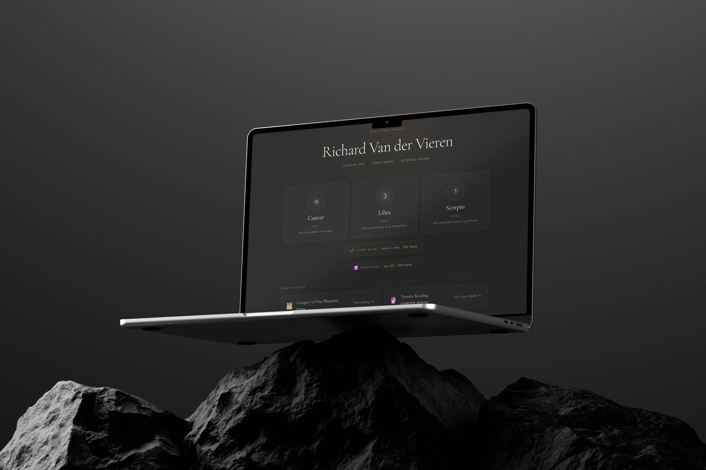
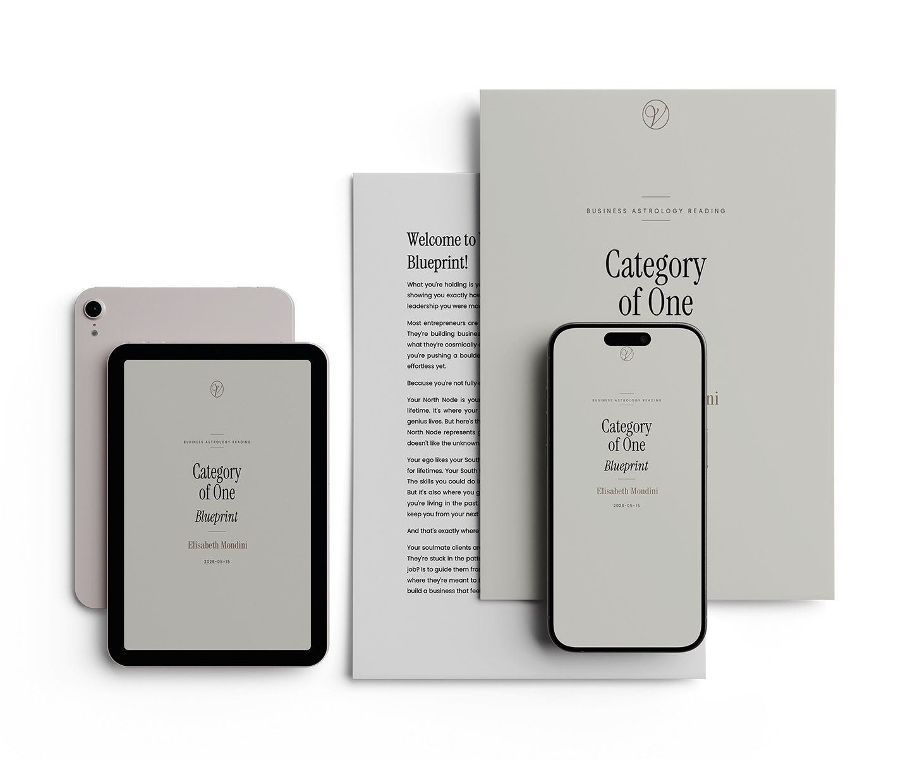
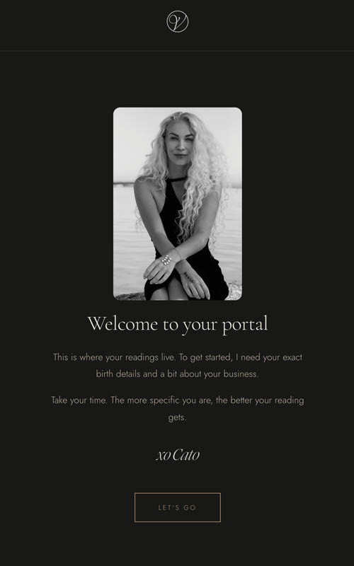

A woman who reads the stars for a living asked me to build her a tech stack. I said yes because she had real clients paying real money for readings that told them when to launch their course and which city to move their business to based on where Saturn was sitting in their chart. I don't know if Saturn cares about your product launch. But her clients think so, and they pay $197 to find out.
Cato Vermeulen is a business astrologer. She maps natal charts to business strategy. Pricing, positioning, team dynamics, timing. The whole thing runs on planetary math and an ability to make founders feel seen.
When I met her setup, it looked like this: two years of brand voice documents living inside a chat AI tool. Client details in email threads. PDFs sent as attachments. Content ideas scattered across four apps. A growing waitlist and a system held together by memory and caffeine.
She didn't need more clients. She needed to stop running her business like a group chat.
Your best ideas are scattered across a dozen places right now. Notes apps. Browser tabs. Old chats you closed and will never find again. Every time you sit down to work, you rebuild context from memory. You forget most of it. Cato was no different.
The ApproachWe started with her brain. Two tools, two jobs. Obsidian is the storage. A free notes app that keeps everything as plain text files on your own computer. Notes link to each other, and over time those links form a visible map of how your ideas connect. Claude is the brain on top. It reads the entire vault, files new information where it belongs, and answers questions across all of it. The whole thing is just text files. You own the brain, not the tool.
Before touching a single line of code, we pulled everything out of Cato's head and into an Obsidian vault on her Mac. Two years of brand voice docs. SOPs she'd built but never saved anywhere searchable. Content frameworks. Client intake patterns. Her entire vocabulary for how she talks about astrology in business.
All of it went into folders. Brand bible. Voice samples. Templates. Then we set up a shared workspace. A Git repo that syncs between her vault and mine. She edits her brand bible, I see it. I write a new SOP, she gets it. No emailing files. Her Obsidian syncs every ten minutes. She never opens a terminal. She doesn't know what Git is. She just writes.
This became the foundation for everything else. Every system we built after this reads from the same brand docs. Same voice. Same rules. Same source of truth.

Every client needed a proper home. Dark background. Gold accents. Frosted glass cards. Client buys a reading, gets an email with a one-click login, lands in their portal, fills in birth details, and the reading appears when it's ready. No attachments, no drive links.

Four types. A full natal chart blueprint. A three-month transit reading. An astrocartography reading. A quick mini reading. We streamlined the entire process. Client submits details through the portal, the chart gets computed, and Cato delivers the reading through the same system. Clean handoffs, no loose threads.

A $27 interactive dashboard. Plug in your birth data, get your chart mapped to business. Element balance bars. Modality breakdowns. Business archetype spectrums. A money style analysis. A visibility score. Over 300 text snippets written in her mentoring voice. Gateway product that makes you want the full reading.
Every premium client now gets personalized daily transit alerts on Telegram. Jupiter squares your natal Venus today? You get a message at 7am telling you to sit on that partnership deal for 24 hours. Mars trines your Mercury? Good day to send the pitch.
The bot also delivers course lessons. Cato adds them from her phone by messaging the bot. Students get the content in their DMs. And there's a free channel called Opulent. 242 subscribers getting weekly value drops. When someone wants the personalized version, they start the bot and link their email.
Cato publishes astrology carousels on Instagram for every zodiac season. Twelve seasons, twelve carousels. Each one needs current transit data, sign-specific business advice, and design that matches her brand. This used to take her an afternoon per carousel.
We built a pipeline that pulls the planetary positions from an astrology API, writes the copy in her voice, and pushes the finished carousel straight into her Canva account. Design template ready. She swaps her photos and hits publish. Fifteen minutes. I timed it.
Extracted two years of accumulated knowledge into a structured vault. Brand bible, voice samples, anti-slop rules, content templates. Set up a shared workspace that syncs automatically. This became the single source of truth that feeds every other system.
Built the client portal, the reading pipeline, and the Cosmic Business Profile. Four reading products, one interactive dashboard, all flowing through a single system. Clients land in a premium environment that matches the quality of Cato's work.

Launched the Telegram ecosystem for daily client touchpoints. Built the carousel pipeline for content production. Connected the entire funnel: free channel to bot to profile to full reading. Every piece feeds the next.
52 clients through the portal. Four reading products, one interactive profile, two masterminds, a course, and a Telegram ecosystem. Monthly infrastructure cost: less than a gym membership.
She didn't hire a team. She hired me.